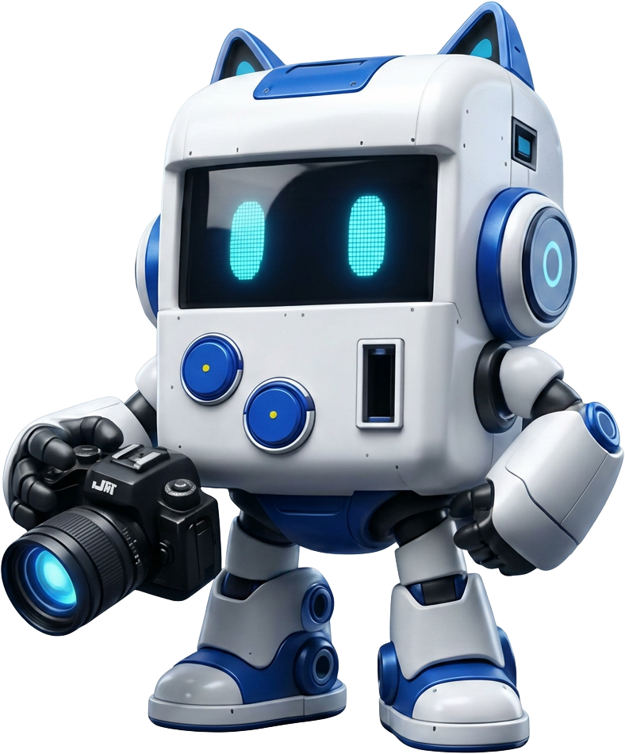

Las preferencias se guardan en este navegador.
Producción Multimedia · 2026
Documentación del proceso creativo en nueve fases: investigación, brief, idea, concepto gráfico, manual de marca, sketch, wireframes, mockup y prototipos.

Iniciar recorrido